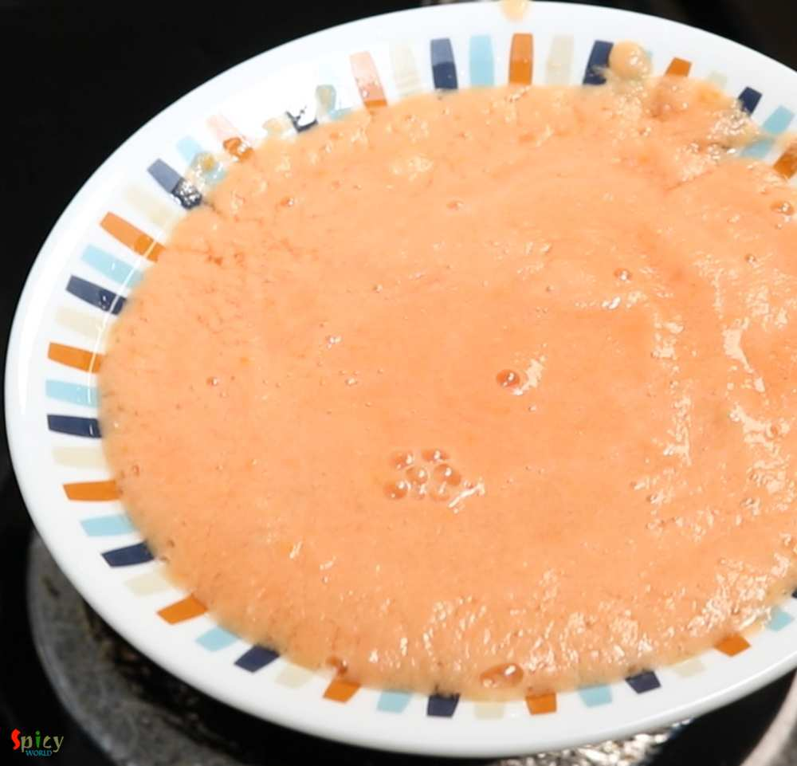
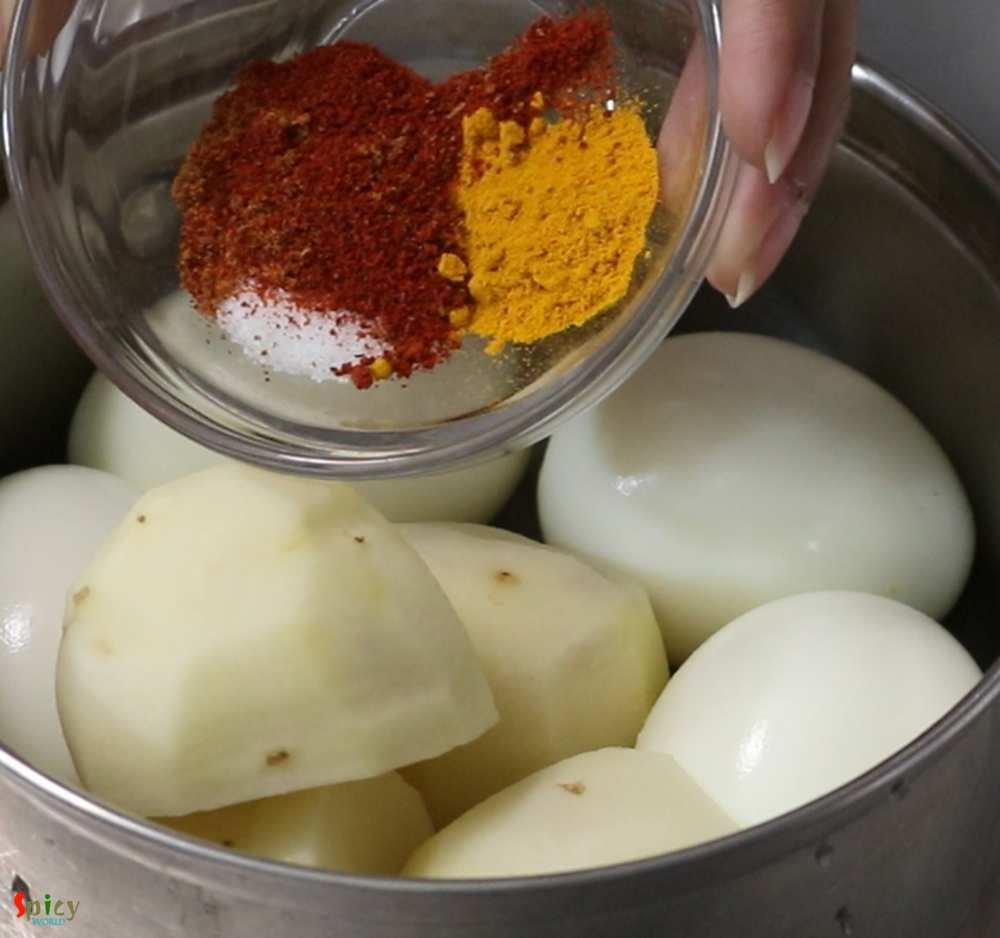
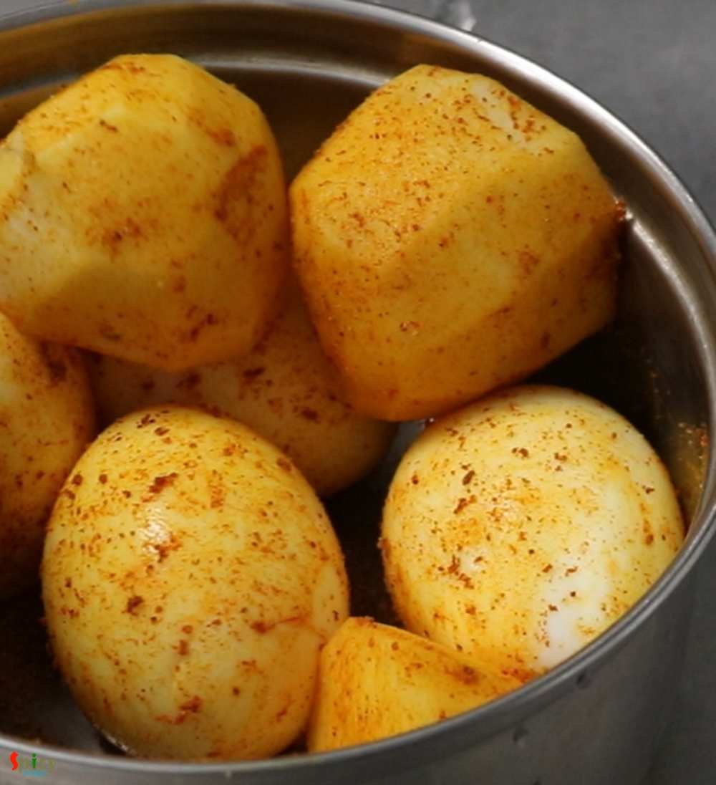
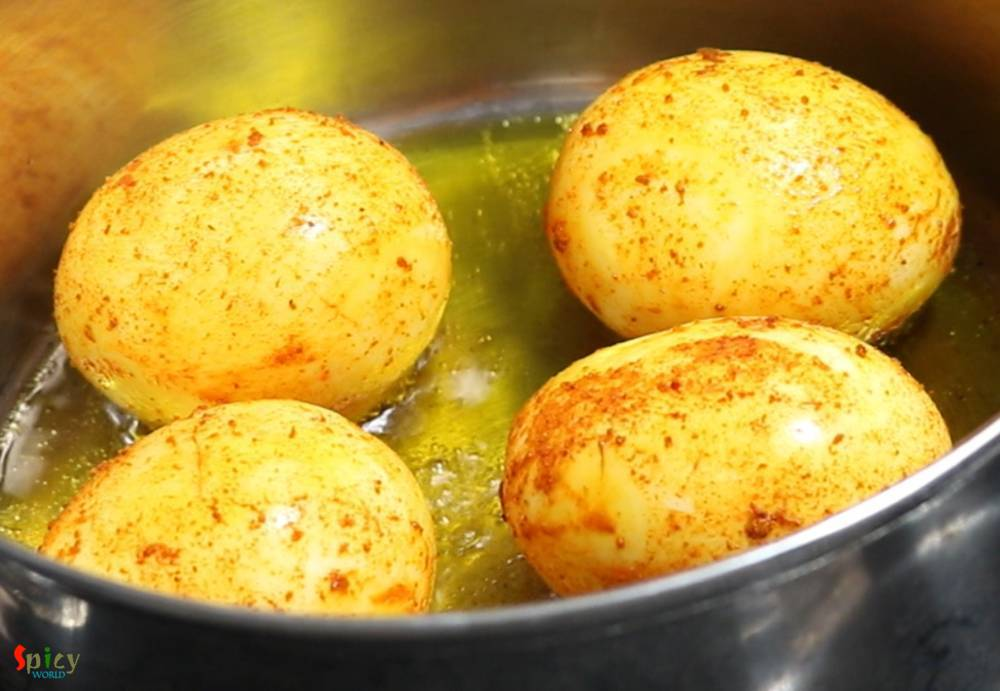
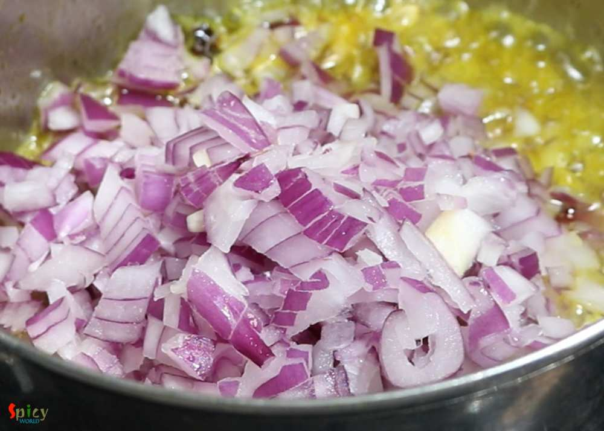
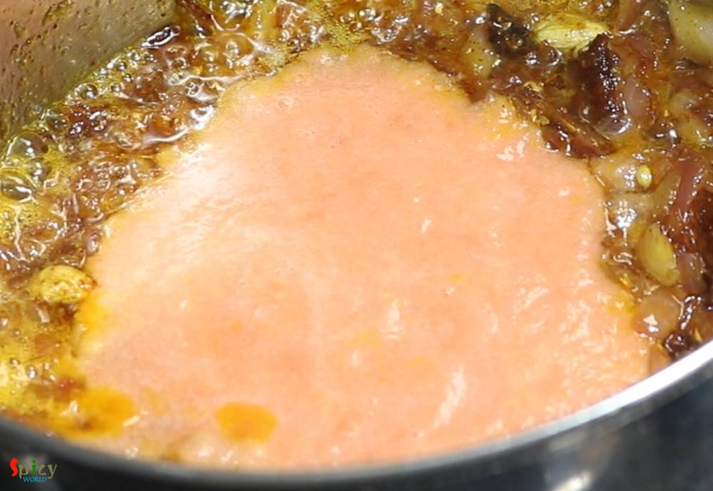
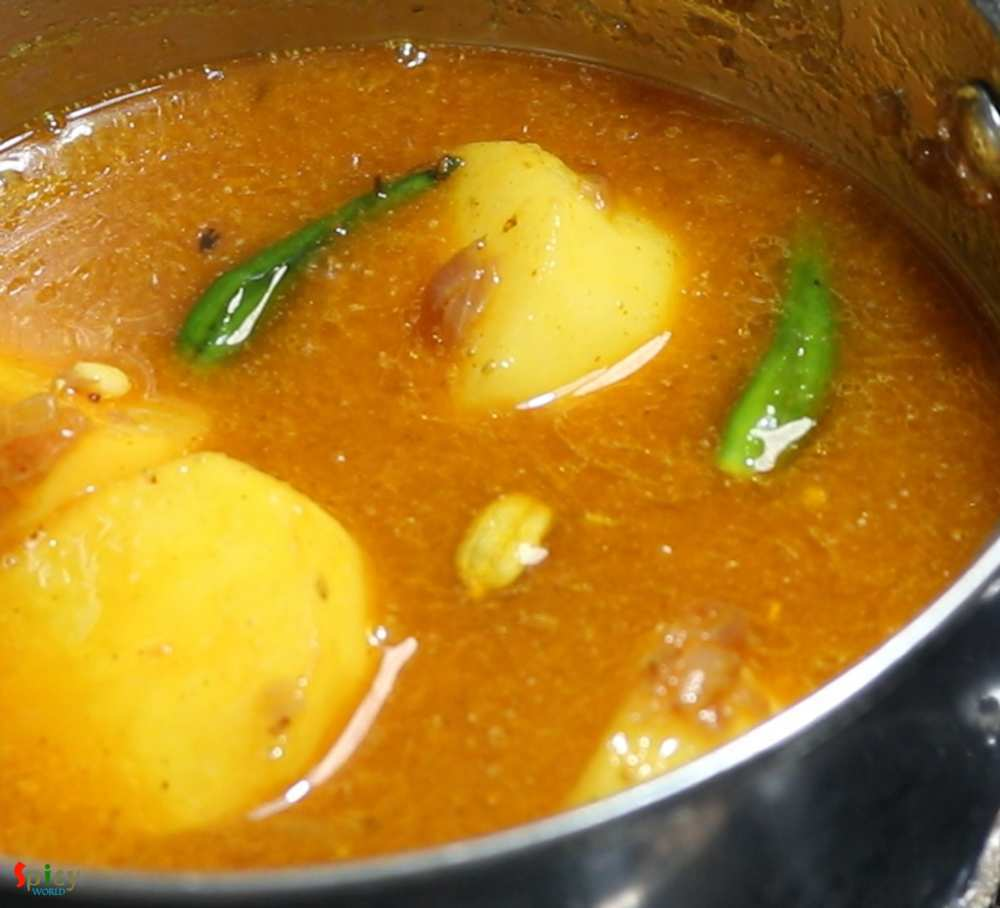
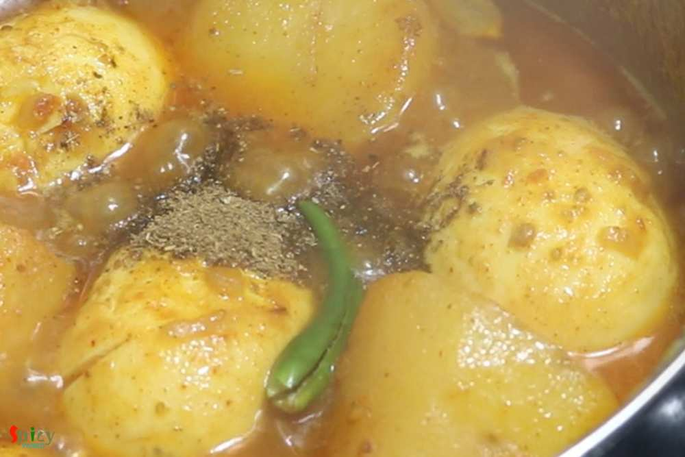
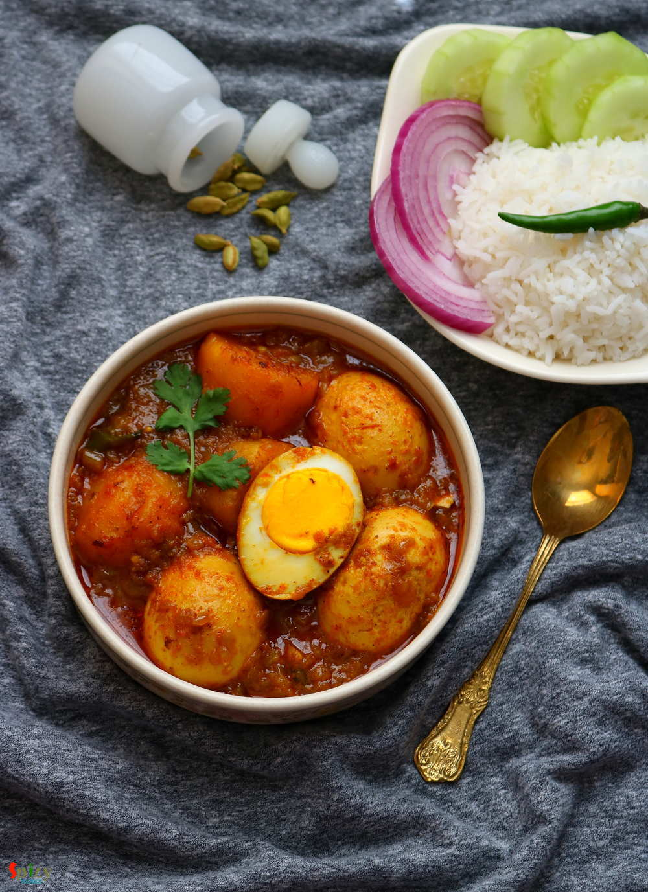

Simple and Easy Recipes
Dimer Dalna / Egg & Potato curry
By Arpita © 2016 Spicy World
Feb 26, 2019
Feb 26, 2019

Dalna means a curry which contains potato with other vegetables or protein. But potato is a must for Dalna. Some also call it Torkari. Summer is coming and so is sweaty tiredness with it. If you don't want to spend long time in the kitchen, no worries! I have a solution. Dimer Dalna or Egg and Potato Curry is the most simple and easy recipe which can easily feed a crowd. Anyone can enjoy a good, tasty lunch or dinner with this comforting Egg curry and steamed rice without spending much time in kitchen. So, here is the detailed recipe for you.

Ingredients
- 4 eggs.
- 4 potatoes, cut into halves.
- 1 medium onion, finely chopped.
- 1 medium tomato, roughly chopped.
- 3 big cloves of garlic.
- 1 inch ginger.
- 3 slitted green chilies.
- Salt and sugar as per your taste.
- Spice powder 1 Teaspoon each (turmeric powder, red chili powder, roasted cumin and coriander powder).
- Whole spices (2 green cardamom, 1 very small cinnamon stick, 2 cloves).
- 1 cup of hot water.
- 1 Teaspoon of garam masala powder.
- 1/4th cup of mustard oil.
{kind=link}
{kind=link}
Steps
First make a smooth paste out of tomatoes, ginger and garlic with the help of little water.
Then keep it aside for later use.
Drop very carefully the eggs in boiling water and boil for exactly 7 minutes.
Then immediately put the eggs under cold water. This way the eggs will remain perfectly soft, not too hard.
After sprinkle some salt, little turmeric and red chili powder all over the boiled eggs and raw potatoes.
Rub them well with the spices and keep aside for 5 minutes.
Now heat mustard oil in pan.
First add the eggs and fry on medium flame for 2-3 minutes. Then remove them from oil.
Next add the potatoes and fry for 3 minutes. Then remove them from oil.
Now in that same oil add all of the whole spices. Saute for few seconds.
Then add chopped onion, fry for 5 minutes on medium flame.
Then add the above mentioned spice powder, mix well for 2 minutes.

Now add the tomato, ginger, garlic paste. Cook for 5 minutes. For seasoning, add salt and sugar as per your taste.
When the oil starts separating, add the fried potatoes. Mix well for 2 minutes.
Then add a cup of hot water and 2 green chilies. Cover the pan and cook until the potatoes become 80% soft.
Then add the eggs and cook for 3 minutes.
When the gravy becomes thick and potatoes become fully soft sprinkle some garam masala powder and add a green chili. Mix well.
Turn off the heat and let the curry rest for another 10 minutes then serve.
Additional Info
Recipe Category: Main dishes: Poultry
Recipe Cuisine: Indian
Preparation Time: 20 minutes
Cooking Time: 30 minutes
Serves: 4
Your egg and potato curry is ready to serve.
- Serve this hot with steamed rice or roti ...
{kind=link}
All Images and Recipes are copyrighted to Spicy World.
For more recipes visit us at http://spicyworld.in
Leave Your Comments